CLAUDE’S PICK
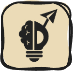
Claude Code Mods — 커스텀 플러그인으로 인터페이스 확장하기
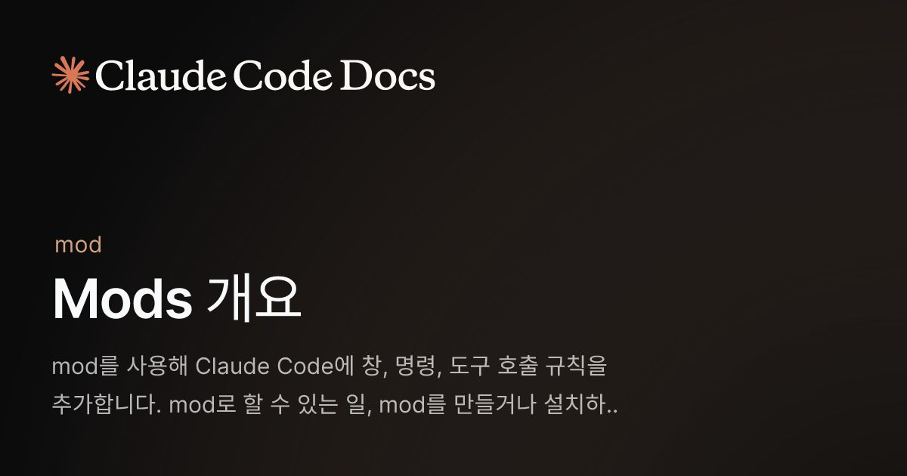
Claude Code의 기능을 제한적으로 확장하는 훅(Hook)과 달리, mod는 JavaScript 또는 TypeScript 이벤트 핸들러로 구성되어 Claude Code 내부에서 직접 실행된다. 사용자 인터페이스 그리기, 도구 호출 제어, 명령 실행, 훅 간 데이터 공유 등 외부 구성 방식으로는 불가능한 고급 기능을 제공한다. 각 요청 후 컨텍스트 사용량을 차트로 표시하는 창과 같은 맞춤형 기능을 Claude Code에 추가할 수 있다.
핵심 포인트: 핵심 기여: mod는 트랜스크립트 옆 창이나 프롬프트 위 띠 영역에 직접 UI 요소를 배치하고, Claude Code 자체 인터페이스 요소를 교체 또는 스타일링하며, 도구 호출 보류 및 요청 재라우팅을 통해 기존 훅으로 불가능한 수준의 제어 기능을 제공한다.
🔗 code.claude.com/docs/ko/plugins/mods/over…
기타 (Others)
Sentry: 개발자 중심의 에러 추적 및 성능 모니터링 플랫폼
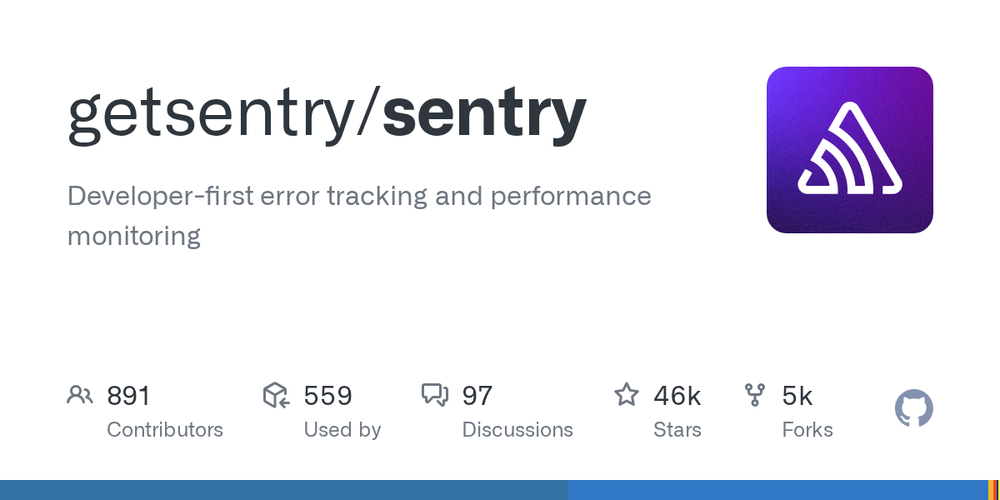
소프트웨어 개발 과정에서 발생하는 에러와 성능 문제를 빠르게 감지하고 추적하기 어려운 문제를 해결하는 디버깅 플랫폼. Sentry는 JavaScript, Python, Ruby, PHP, Go, Java, Swift 등 20개 이상의 프로그래밍 언어를 지원하며, 에러 로깅, 성능 모니터링, 네이티브 크래시 캡처, 브레드크럼 수집 등의 기능으로 개발자가 문제를 더 빠르게 진단하고 해결할 수 있도록 돕는다.
핵심 포인트: 핵심 기여: 891명의 기여자가 참여한 오픈소스 프로젝트로 559개 조직에서 사용 중이며, 46k 스타와 5k 포크를 기록. JavaScript, Electron, React Native, Python 등 다양한 SDK를 통해 메인 프로세스와 렌더러 프로세스의 에러, 네이티브 크래시, 컨텍스트 정보를 통합 수집.
GitHub
turbopuffer — 벡터 인덱스 중심에서 범용 저장소 아키텍처로 진화
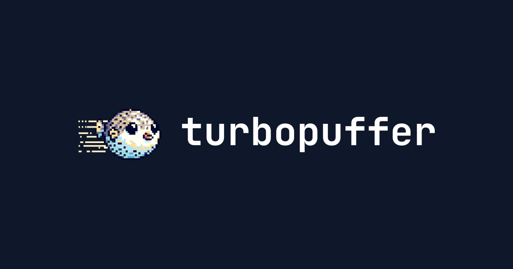
turbopuffer는 벡터 데이터베이스로 출발했지만 텍스트 검색, 정규식 검색, 그룹화 및 집계 등 다양한 쿼리 요청이 증가하면서 벡터 인덱스 중심 아키텍처의 한계에 직면했다. v3부터는 벡터 인덱스를 보조 인덱스로 변경하고 새로운 기본 인덱스를 도입하여 텍스트, 정규식, 벡터 검색을 모두 빠르게 지원하고 SQL 쿼리 확대를 가능하게 한다.
핵심 포인트: 핵심 기여: 벡터 중심 설계에서 범용 저장소 아키텍처로 전환하여 텍스트 검색, 정규식 검색, 그룹화, 집계 등 다양한 쿼리 플랜을 제약 없이 지원하고 모든 검색 성능을 향상시킨다.
🔗 turbopuffer.com/blog/rip-vector-database
기타 (Others)
AI & RESEARCH
Transformers Stop Thinking Too Early — 소형 LoRA로 맥락 추적 능력 99% 향상
사전학습된 트랜스포머 모델들이 맥락 내 참조를 따르기 위해 모델 깊이의 극히 일부만 활용하는 문제를 발견했다. 13개 기본 모델이 평균 1.4~3.6줄만 추적할 수 있는 반면, 단일 조기 계층에 적응된 rank-8 LoRA는 모든 모델 가중치를 동결한 상태에서 계산을 확장한다. Qwen3-8B는 24줄 체인에서 정확도를 15.5%에서 99%로 향상시키고, 더 오래 학습된 LoRA는 50줄까지 도달하며 Ouro-1.4B는 8개 루프 후 160줄 이상을 처리한다.
핵심 포인트: 핵심 성과: 극히 소형한 LoRA 어댑터만으로 Qwen3-8B의 맥락 추적 정확도를 99%까지 달성하고, 모든 모델 가중치를 동결한 상태에서도 최대 160줄의 긴 체인 추적 능력 확보. 고정된 모델 측정을 통해 최적 개입 계층을 자동 식별 가능하며 MuSiQue에서도 성능 향상 입증.
논문 (Papers)
Vela 2.0 — RAG 할루시네이션과 PII 필터링을 정확한 위치까지 식별
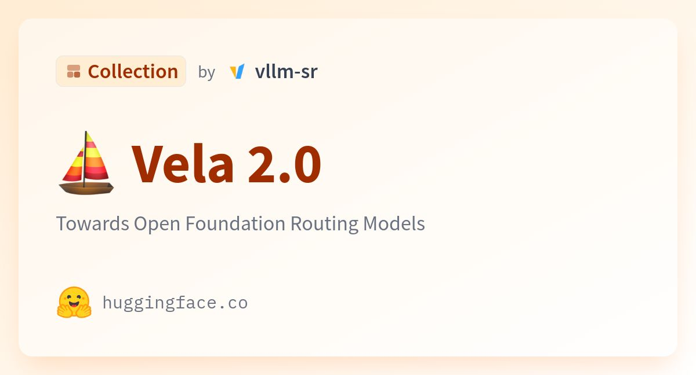
RAG 시스템에서 할루시네이션과 개인정보 노출 문제를 해결하기 위해 vLLM팀이 공개한 경량 라우팅 모델. Vela 2.0은 단 한 번의 호출로 문장 내 특정 단어가 개인정보인지 여부와 RAG 답변 중 문서에 근거하지 않은 부분의 정확한 텍스트 위치(span)를 식별한다. 0.3B부터 9B까지 4가지 모델 크기로 제공되어 다양한 배포 환경에 대응 가능하다.
핵심 포인트: 핵심 기여: 단일 호출로 PII 탐지와 할루시네이션 검증을 동시에 수행하며 정확한 텍스트 위치를 반환하는 오픈 라우팅 모델로, 0.3B~9B 경량 모델 옵션으로 빠른 추론 속도 실현
🔗 huggingface.co/collections/vllm-sr/vela-20
기타 (Others)
OpenAI — 미공개 내부 모델의 수학 논문 722편 공개
OpenAI가 아직 공개하지 않은 내부 모델이 생성한 수학 원고 722편을 GitHub에 공개했다. 준리만 가설, 힐베르트 10번 문제, 호지 추측 등 수학계의 오랜 난제들이 포함되어 있으며, 372개 묶음으로 정리되었다. 이 모델에는 약 4,000개 문제가 제시되었고, 결과 하나당 평균 ChatGPT Pro 추론 3시간 분량의 연산이 소요되었다. OpenAI는 컴퓨터 검증 여부에 따라 235개 묶음은 Lean 형식화가 완료되었고, 나머지는 형식화하지 않은 상태로 오류가 있을 수 있음을 명시했다.
핵심 포인트: 핵심 성과: 722편의 수학 원고 중 372개 묶음으로 정리하여 공개했으며, 이 중 235개(63%)는 Lean을 통한 컴퓨터 검증이 완료되었다. 결과 하나당 평균 ChatGPT Pro 추론 3시간 분량의 연산이 투입되어 생성되었다.
🔗 openai.com/index/sharing-ai-progress-in-m…
기타 (Others)
EmbeddingGemma 2: 멀티모달 온디바이스 임베딩 모델 공개
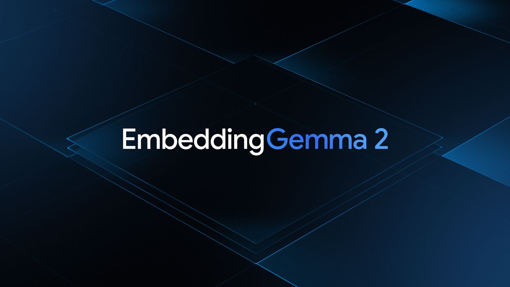
기존 텍스트 임베딩 모델의 한계를 극복하기 위해 구글 딥마인드가 EmbeddingGemma 2를 공개했다. 텍스트, 코드, 이미지, 영상, 음성을 통합된 임베딩 공간에 배치하여 음성 메모로 영상을 검색하거나 한 문장으로 녹음 구간을 찾는 등 단일 모델로 멀티모달 검색을 수행할 수 있다. 7억 4천만 개 파라미터로 스마트폰에서 인터넷 없이 작동하며 Apache 2.0 라이선스로 상업 이용이 자유롭다.
핵심 포인트: 핵심 성과: 중간 처리 단계를 제거하여 지연 시간과 메모리 부담을 감소시켰으며, 필요한 인코더만 선택 사용 가능해 텍스트 전용 2억 7천만 파라미터부터 멀티모달 5억 7천만 파라미터까지 유연한 배포 옵션 제공. 20백만 이상의 다운로드 기록을 보유한 1세대 대비 멀티모달 확장으로 활용성 극대화.
🔗 blog.google/innovation-and-ai/technology…
블로그 (Blog)
Mistral Large 4: 1조 파라미터 오픈 웨이트 모델 공개

미스트랄이 1조 파라미터 규모의 멀티모달 모델 ML4를 프리뷰로 공개했다. 실제 계산에는 490억 개 파라미터만 활성화되는 혼합 전문가 구조를 채택하고, 유럽 자체 인프라에서 학습되어 데이터 주권을 보장한다. 보안 취약점 재현 및 패치 작업에서 82%로 모든 모델 중 최고 성능을 달성했으며, 미국·유럽산 오픈 웨이트 모델 중 가장 뛰어난 성능을 보여준다.
핵심 포인트: 핵심 성과: Artificial Analysis 종합 지수에서 38점(GPT-6 Luna와 동등, DeepSeek V4.1 Flash 39점과 1점 차이), 보안 취약점 재현 평가에서 82% 달성으로 모든 모델 중 1위, 160개 이상 언어 학습 및 512K 토큰 컨텍스트 지원.
🔗 mistral.ai/news/mistral-large-4/
기타 (Others)
SelfSearch: 4달러로 AI가 스스로 지시문과 도구를 개선하는 자가학습 에이전트
LLM 에이전트가 스스로를 개선할 때 외부 보상 없이도 효율적으로 성능을 높이기 어려운 문제를 해결하는 연구. SelfSearch는 이전 자가개선 기록을 참조하여 에이전트가 지시문과 도구를 반복적으로 수정하고 최적화하도록 유도한다. 서울대 연구진이 DeepSeek 기반으로 구현하여 벤치마크 82% 수준의 성과를 단 4달러의 저비용으로 달성했으며, 기존의 대규모 모델 재학습 방식 대비 에이전트의 자율적 환경 최적화가 더욱 강력한 해결책임을 제시한다.
핵심 포인트: 핵심 성과: 4달러의 저비용으로 벤치마크 1위 수준 82% 성능 달성, 외부 보상 없이 이전 수정 기록만으로 자가개선을 통해 DeepSeek 기반 에이전트의 지시문과 도구를 최적화.
논문 (Papers)
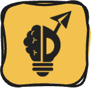
Jev — 결정 지향 모델 기반 추천 재순위화 실증 연구
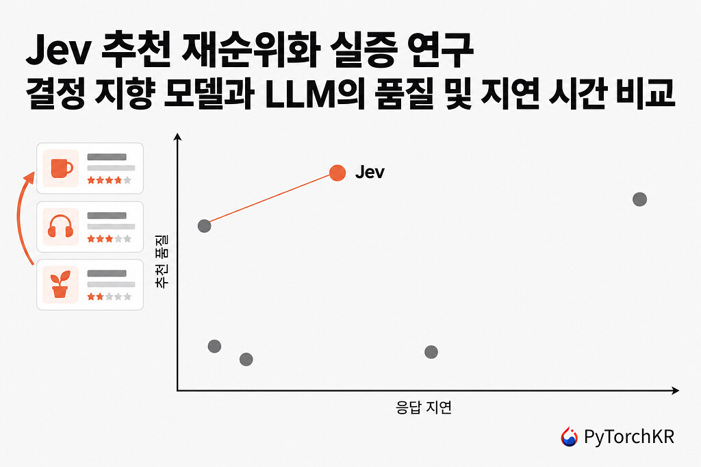
추천 시스템에서 재순위화 단계의 품질과 지연 시간이 중요한 문제. TypeSafe AI의 결정 지향 모델 Jev가 Amazon 리뷰 데이터 12개 조건 중 11개에서 Qwen2.5 기반 LLM 재순위화와 SASRec, DCNv2 대비 가장 높은 Hit Rate@10과 MRR을 달성했다. 특히 후보 200개 조건에서 Jev의 지연 시간 중앙값은 포인트와이즈 Qwen의 약 10분의 1에서 17분의 1 수준으로, 품질을 유지하면서 성능 효율성을 크게 개선했다.
핵심 포인트: 핵심 성과: 12개 조건 중 11개에서 Hit Rate@10과 MRR 최고 달성, 후보 200개에서 포인트와이즈 Qwen 대비 지연 시간 10배에서 17배 단축. 결정 지향 모델이 생성형 LLM 재순위화보다 추천 품질과 속도 양면에서 우수함을 입증.
🔗 discuss.pytorch.kr/t/jev-reranking-llm/12…
기타 (Others)
Cursor: AI 에이전트 작업 위임의 30가지 체계적 방법론
AI 에이전트에게 작업을 효율적으로 위임할 때 개발자가 직접 코드를 작성하기보다 에이전트가 독립적으로 동작할 수 있는 환경 구축이 핵심이라는 문제의식에서 출발한 콘텐츠. Cursor 엔지니어의 실제 경험을 통해 에이전트 성능 최적화, 검증 자동화, 올바른 선택 유도 등 30가지 체계적 방법론을 제시하며, 인간이 중개자 역할을 하던 병목을 제거하고 에이전트 자율성을 극대화하는 실전 기법을 공개한다.
핵심 포인트: 핵심 기여: Meta React 팀 출신 엔지니어가 개인 프로젝트에서 얻은 에이전트 작업 위임 노하우를 30가지 실용적 방법론으로 체계화, 특히 검증 철저화와 쉬운 선택을 올바른 선택으로 만드는 스킬 설계를 강조.
🔗 youtube.com/watch?v=MN9dGgmLyso
기타 (Others)
RankEvolve: 다중 에이전트 교차 검증으로 ML 연구 자동화 신뢰도 향상
ML 연구 자동화 에이전트에서 데이터 누수, 끊긴 그래디언트 같은 조용한 버그로 인한 장시간 학습 손실이 발생하는 문제를 해결한다. 메타의 RankEvolve는 Claude Code와 Codex를 분리해 상호 교차 검증 및 코드 수정 프로토콜을 구성했으며, 동일 비용 범위 내에서 실행 정확도를 45.8%에서 62.5%로 향상시켰다. 단일 에이전트 강화보다 상호 감시와 통제 파이프라인 설계가 자동 연구 에이전트의 성패를 결정한다.
핵심 포인트: 핵심 성과: 교차 검증 기반 다중 에이전트 프로토콜로 실행 정확도 16.7%p 상승(45.8% → 62.5%), 동일 비용에서 신뢰성 극대화 달성
논문 (Papers)
Claude-shaped Science: 하버드 교수의 AI 협력 과학 연구 확장
하버드 물리학자 매슈 슈워츠는 Claude와의 협력 방식을 재설정하여 AI가 대학원생처럼 지도받기를 거부하고 대신 Claude가 잘 푸는 문제를 찾아내는 역발상적 접근을 시도했다. 3개월간 약 400개의 후보 문제를 검토한 결과 18개 분야에서 36편의 논문 원고를 작성했으며, 이 과정에서 개발한 BootLoops라는 오픈소스 도구는 수학, 물리, 컴퓨터과학의 계산 도구를 통합하여 LLM이 정밀한 정량 과학 문제를 풀 수 있도록 지원한다.
핵심 포인트: 핵심 성과: 생태학, 유전학, 경제학, 언어학 등 18개 분야에서 Claude와 협력하여 36편의 논문 원고를 생성했으며, 이는 AI 과학 연구에서 임피던스 불일치 문제를 Claude-shaped 문제 발굴로 해결하는 새로운 방법론을 제시한다.
🔗 anthropic.com/research/claude-shaped-scie…
기타 (Others)
Andrej Karpathy의 AI 시대 이해법: 4단계 학습 전략
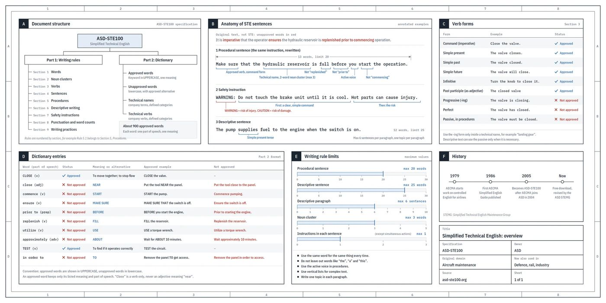
AI 시대에는 생산 속도보다 이해 속도가 생산성의 병목이 되고 있다. 안드레 카파시가 제시하는 이해 방법은 항공 정비 매뉴얼 규격인 ASD-STE100을 따르는 간결한 문장 작성, 텍스트를 다이어그램으로 시각화, 인터렉티브한 웹 페이지를 통한 직관적 이해, 그리고 커스텀 영상 설명으로 단계를 높이는 방식이다. 각 단계마다 AI를 활용하여 효율성을 높일 수 있으며, 특히 읽기 속도와 이해 깊이의 격차를 좁히는 데 초점을 맞춘다.
핵심 포인트: 핵심 기여: ASD-STE100 규격 기반 문장 작성부터 다이어그램, 인터렉티브 웹페이지, 설명 영상까지 4단계 구조화된 이해 프로세스를 제시하며, 각 단계에서 LLM을 활용하여 복잡한 개념의 이해도를 최대한 증폭시키는 실무 방법론을 제공한다.
🔗 x.com/karpathy/status/2105819303471976479
기타 (Others)
claude.dev — Anthropic 개발자들의 실전 Claude 활용 가이드
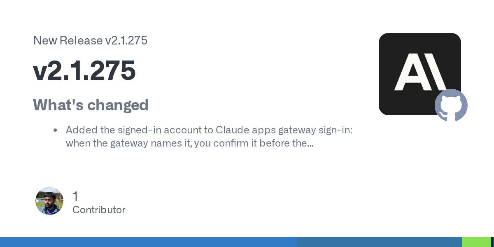
Claude를 효과적으로 사용하기 위한 방법을 찾는 개발자들이 공식 문서보다는 Anthropic 개발팀이 직접 공유하는 실전 경험을 필요로 한다. claude.dev는 이러한 문제를 해결하는 기술 블로그로, Claude 5의 System Prompt 최적화 전략, 수백 개 Skills의 운영 방식, Claude Code의 Harness 구성 방법, 성능 개선 사례(2주 만에 3배 속도 향상), 모델 간 비용 효율성 비교 등 실무 중심의 인사이트를 제공한다.
핵심 포인트: 핵심 기여: Claude 모델 개발과 배포 과정에서 얻은 실제 사용 경험과 최적화 기법을 공개하여, 개발자들이 System Prompt 효율성, 모델 선택 기준, 비용 관리 전략을 즉시 적용할 수 있도록 지원한다.
기타 (Others)
Anthropic: 문맥 검색을 통한 RAG 성능 49% 개선
전통적인 RAG 시스템이 정보 인코딩 과정에서 문맥을 손실하여 관련 정보 검색에 실패하는 문제를 해결하기 위해 Anthropic이 제시한 방법. 문맥 임베딩과 문맥 BM25 두 가지 기법을 결합한 문맥 검색 방식으로 실패한 검색을 49% 감소시키고 재순위 지정과 함께 적용 시 67%까지 개선한다. 또한 프롬프트 캐싱 기술로 200,000 토큰 이하의 소규모 지식베이스는 검색 과정 없이 직접 포함시켜 비용과 속도를 모두 최적화할 수 있다.
핵심 포인트: 핵심 성과: 문맥 검색 방식이 RAG의 검색 실패율을 49% 감소시키고, 재순위 지정 결합 시 67% 감소. 프롬프트 캐싱으로 반복 작업의 지연 시간 2배 이상 단축 및 비용 최대 90% 절감.
🔗 anthropic.com/engineering/contextual-retr…
기타 (Others)
DEVTOOLS & OPEN SOURCE
Strands Decider — AI 에이전트의 반복 판단을 위한 경량 의사결정 모델
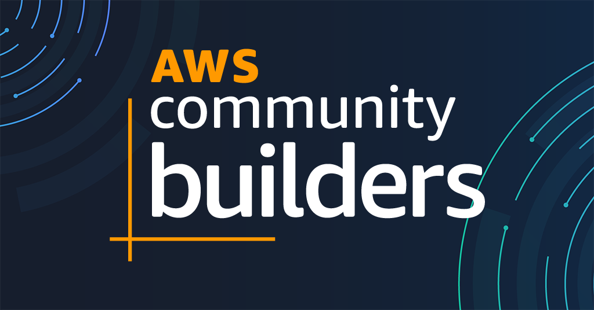
AI 에이전트가 요청을 처리하는 과정에서 여러 번 반복되는 의사결정으로 인해 API 호출 비용과 지연이 누적되는 문제를 해결하기 위해 AWS가 Strands Decider 2B를 공개했다. 이는 생성 모델이 아닌 판단 전용 모델로, 분류나 점수화 같은 구조화된 선택을 빠르게 반환하여 에이전트의 성능을 최적화한다. 모델 가중치뿐 아니라 학습 데이터와 코드도 공개하여 로컬에서 추가 학습과 커스터마이징이 가능하다.
핵심 포인트: 핵심 기여: 의사결정 모델 전문화로 API 호출 비용과 지연을 감소시키며, 생성 모델과 판단 모델의 역할 분리로 에이전트 개발 구조를 단순화했다. 완전 공개된 모델과 Strands Agents SDK를 통해 로컬 실험과 프로덕션 배포까지 지원한다.
🔗 velog.io/@xgro/aws-strands-decider-2b-han…
기타 (Others)
Claude Code Mods Guide — 2,640개 커뮤니티 모드 통합 가이드
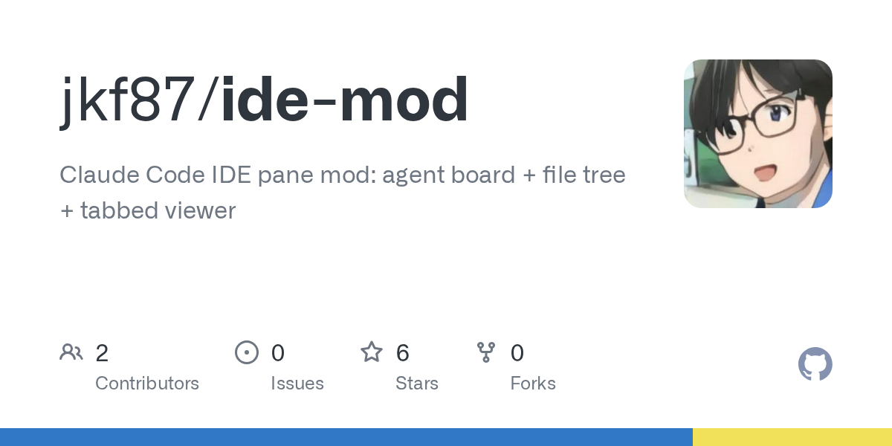
Claude Code 사용자들이 function hooks 플러그인 형태의 모드를 설치하고 개발할 때 겪는 학습곡선과 정보 부족 문제를 해결하기 위해 제작된 비공식 커뮤니티 가이드. 모드의 개념, 안전한 설치 방법, 직접 개발하는 방법을 설명하고 2,640개의 커뮤니티 모드를 검색 가능한 디렉터리로 제공한다. 영어, 한국어, 일본어, 중국어, 프랑스어, 독일어 등 6개 언어를 지원한다.
핵심 포인트: 핵심 기여: 2,640개 커뮤니티 모드를 한곳에서 검색할 수 있는 통합 디렉터리 제공 및 다국어 지원으로 전 세계 Claude Code 사용자의 진입장벽 해결.
기타 (Others)
AI-Infra-Guard — AI 인프라와 에이전트 보안을 점검하는 오픈소스 레드팀 플랫폼

AI 서비스 배포 시 알려진 취약점, 에이전트 도구 오용, LLM 탈옥 공격 등 다양한 보안 위협을 사전에 탐지하기 어려운 문제를 해결하는 오픈소스 플랫폼. Tencent가 개발한 AI-Infra-Guard는 Ollama, ComfyUI, vLLM 등 주요 AI 서비스에 대한 서비스 주소 입력만으로 구성요소와 버전을 식별하고 146개 AI 구성요소의 2000개 이상 CVE 규칙으로 취약점을 자동 탐지한다. 웹 UI와 API, CLI로 기존 보안 점검 절차와 연동 가능하며 Docker 기반으로 내부 환경에서 안전하게 운영할 수 있다.
핵심 포인트: 핵심 성과: 146개 AI 구성요소와 2000개 이상의 CVE 규칙 지원, ClawScan, Agent Scan, LLM 탈옥 평가 등 6가지 통합 보안 점검 기능 제공, 플러그인 방식 확장으로 검사 규칙과 데이터셋 지속 업데이트 가능.
기타 (Others)
Tern — 터미널계의 Raycast를 지향하는 네오터미널
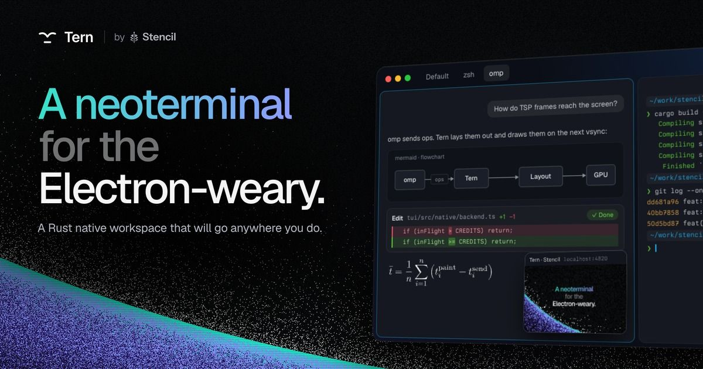
기존 Electron 기반 터미널의 무거움을 개선하기 위해 OmP 팀이 개발 중인 Rust 네이티브 터미널 애플리케이션. 깔끔한 GUI 인터페이스와 데몬 아키텍처로 재부팅 시에도 작업이 보존되며, 원격 서버 연결 시 QUIC 프로토콜을 통해 세션을 유지할 수 있다. 현재 클로즈드 베타 상태로 대기리스트를 통해 접근 가능하며, 네이티브 앱과 GUI로의 시장 선회 추세에 부응하는 제품이다.
핵심 포인트: 핵심 기여: Rust 네이티브 구현으로 고성능 터미널 경험 제공, 데몬 기반 아키텍처로 세션 지속성 보장, QUIC 원격 접속으로 서버 환경 동기화 지원.
기타 (Others)
PRODUCT & INDUSTRY
OpenAI Auto-review — AI 에이전트 행동을 자동 감시하는 무료 기능 출시
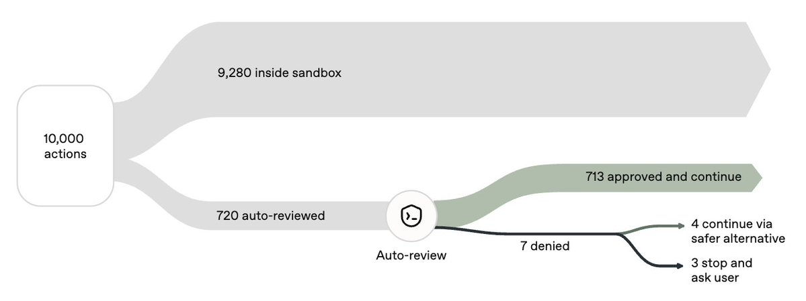
기존 AI 에이전트 샌드박스는 작업할 때마다 사용자 승인을 요구해 장시간 작업에서 불편함이 있었다. OpenAI의 Auto-review 기능은 두 번째 에이전트가 작업 과정을 실시간으로 검토하면서 위험하거나 사용자 요청과 다른 행동을 자동으로 차단한다. ChatGPT 사용자는 무료로 이용 가능하며, 검토 에이전트는 사용량 한도를 차감하지 않는다.
핵심 포인트: 핵심 기여: 에이전트-에이전트 감시 구조로 사용자 개입 없이 보안성과 편의성을 동시에 확보하며, 추론 비용 추가 부담 없이 모든 ChatGPT 사용자에게 무료 제공된다.
🔗 threads.com/@choi.openai/post/DeJTgMLj41u…
기타 (Others)
Claude Code: AI가 AI를 감시하는 ‘You should Know’ 플러그인 출시
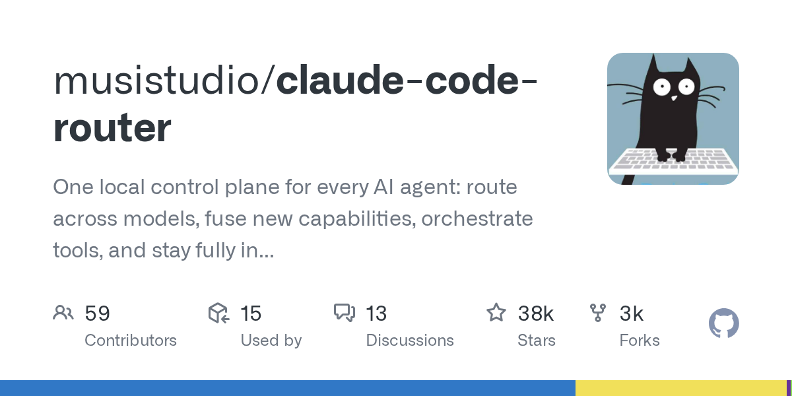
복잡한 코딩 작업에서 Claude가 수많은 파일을 수정하고 결정을 내릴 때 사용자가 모든 과정을 따라가기 어려운 문제를 해결하기 위해 Anthropic이 Claude Code에 ‘You should Know’ 플러그인을 추가했다. 보조 에이전트가 메인 Claude의 출력을 지속적으로 모니터링하면서 사용자가 놓치기 쉬운 중요한 정보나 알아두면 좋은 내용을 별도로 알려주는 구조로, AI 에이전트 복잡도 증가에 따라 AI를 관리하는 AI의 역할이 본격화되고 있다.
핵심 포인트: 핵심 기여: 메인 에이전트와 감시 에이전트의 이원화 구조로 장시간 코딩 작업에서 사용자의 컨텍스트 손실을 방지하고, AI 에이전트 관리의 새로운 패러다임 제시
🔗 threads.com/@choi.openai/post/DeA1GZUAYAX…
기타 (Others)
Claude Code Mods — TypeScript로 Claude 기능 커스터마이징
Claude Code의 기능 확장이 제한적이었던 문제를 해결하기 위해 Anthropic이 Mods 기능을 추가했다. 사용자는 TypeScript로 몇 줄의 코드만 작성해 Claude Code의 동작 방식과 UI를 변경하거나 새로운 기능을 직접 추가할 수 있으며, Claude에게 Mod 제작을 위임하는 것도 가능하다. Token Weather로 컨텍스트 사용량을 모니터링하고, Blast Radius로 위험한 명령 실행을 사전에 차단하며, Replay Theater로 파일 수정 과정을 검토할 수 있다.
핵심 포인트: 핵심 기여: 플러그인 방식의 확장성으로 사용자 정의 기능 개발 가능하며, /plugin 명령으로 설치하고 Claude directory에 공개할 수 있는 생태계 구축.
🔗 threads.com/@choi.openai/post/Dd-ruXhkx6C…
기타 (Others)